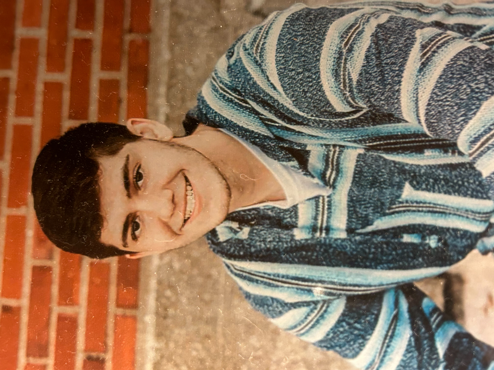

About Me

Hello, I'm Trenton Woll
I am a 21-year-old IT graduate based in Macon, Missouri, currently seeking opportunities in the IT field. I am open to traveling for work or working remotely. I thrive both as a team player and an independent worker.
Objective: I am eager to secure a position as an IT technician, application developer or in a similar role where I can apply my passion for solving complex technical issues and providing exceptional customer support. I aim to leverage my strong technical skills and extensive experience in troubleshooting hardware and software problems.
Skills:
- Proficient in diagnosing and resolving hardware and software issues, providing comprehensive technical support.
- Skilled in programming languages and frameworks including C++, C#, .NET Framework, SQL, Java, JavaScript, HTML5 and CSS.
- Experienced in Linux environments, with a solid background in system administration and command-line operations.
- Strong analytical and problem-solving abilities with a keen attention to detail.
- Excellent communication skills, with the ability to collaborate effectively within diverse team settings.
- Always willing to learn more.
Education:
Associate of Applied Science in Information Technology Programming (Graduated May 2024)
Moberly Area Community College, Moberly, MO
Contact:
- Phone: (573)-507-0650
- Email: trentone2002@yahoo.com
- LinkedIn: Trenton Woll